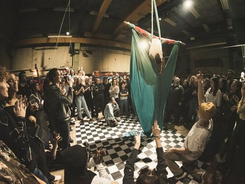

vrijdag
16:00-02:00
Nomadenmakers
De ateliers verdwijnen in ‘s-Hertogenbosch. De stad wordt volgebouwd en plekken zoals oude scholen worden platgelegd. Dit zijn vaak ateliers en zorgt ervoor dat het steeds lastiger wordt voor kunstenaars om een werkplek te vinden/onderhouden. Deze kunstenaars komen in actie!



zaterdag
21:00-23:00
Zwoel
Vrijheid, creativiteit en harmonie, dat zijn de kernwaarden van Zwoel. Deze waarden staan ten grondslag aan het denken, het gedrag en komt tot uiting in het werk van Zwoel. Ze toveren een rauwe locatie om tot paleis van verbazing waar feest gecombineerd wordt met kunsten en creativiteit.

vrijdag
22:00-01:00